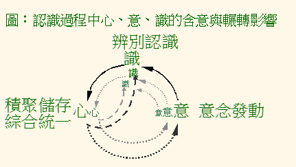

第四章 認識自我
我們的認識發展過程
認識發展過程與佛法的修學
我們說，苦迫，是從身心反應中產生的，更精確地說，應該是在我們接觸境界，認識境界時的身心反應發展中產生的。境界的範圍很廣，包括了「心境」與「外境」。什麼是心境？就是我們內心的情境，可以略分為三類，如內心的感受（受）、思考（想）、抉擇（行）等[1]。外境則包括了內心以外的種種，諸如眼睛與身體觸覺所能覺知的東西，耳朵所聽到的聲音，鼻子與舌頭所能分辨的味道都是。我們說，四聖諦「苦、集、滅、道」中的集諦，是要將煩惱苦迫的根本原因找出來，才能將煩惱徹底地解決。煩惱的根本原因是來自自我感的渴愛，然而，渴愛又如何在我們接觸境界、認識境界中發展出來的呢？我們對境界的認識過程，是動態的、複雜的、不斷發展的，而且十分迅速，我們的煩惱苦迫，也是動態的、變化的，如果不經學習與訓練，很難察覺其中的關連，往往一接觸境界，當有感覺時，常常已經是在煩惱苦迫的情形下了，中間經過哪些轉折，心中可能只有隱隱約約的模糊，甚至是一片空白[2]。如果是這樣，對煩惱苦迫的消除，我們連個下手用功處也沒有，如何期望能徹底的呢？
如果說，我們一旦與境界接觸、認識境界後，自然而然就會有喜怒哀樂、憂悲惱苦的發展，那麼，我們還要修學佛法作什麼？因為我們一接觸境界，不可避免地就會生起認識，這種狀況就像兩手對拍，一定會發出聲音一樣[3]，而且，我們也不能將六根全部關閉，以不與外境接觸來作為修行，因為，如此一來，失去了四食中觸食的滋養，這一期生命將無以為繼。即使只是關閉某一根，與部分外境作隔離，也不認同那是有用的修行，因為，如果真的是這樣，豈不是只有眼瞎、耳聾了，才能修行[4]？我們知道佛法的修行不會是這樣子的，佛陀與舍利弗、目揵連等許多解脫，都不是這樣子的。既然不能不與境界接觸，一接觸又必然引發認識作用，那麼，我們只有從認識作用如何生起，如何發展去瞭解，才能從其中把握佛法修學的下手處，所以，這是我們修學佛法無可迴避的基本認識。
我們的認識發展過程──現代觀點
近代的心理學家與研究腦部的醫學專家，以缺陷矯正與疾病治療的目的，作了許多動物腦部研究的實驗，以及累積了許多人體腦部的病變臨床診療經驗，發現感官器官接收到的訊息，如何在腦中傳遞、作用[5]。這是偏重在腦部構造與功能研究的，雖然與我們佛法修學的目標（煩惱的徹底止息）不一樣，但對我們佛法修學方法的選擇，可能也會有所幫助，值得涉獵。
當我們的感覺器官（眼、耳、鼻、舌、身等），接觸到外境，就如同收到外界的一個訊息。這個訊息經接收器官神經系統的轉化，轉變成為腦部能夠處理的訊息，然後傳到「丘腦」（thalamus）。再從丘腦分兩路送出訊息：一路傳抵「杏仁核」（amygdala）與鄰近的「海馬回」（hippocampus），另一路（主要的）傳達到相關的「大腦皮質區」（cerebral cortex），例如，來自眼睛的視覺訊息，就傳到「視覺皮質區」，來自耳根的聲音訊息，就傳到「聽覺皮質區」，來自皮膚觸覺的訊息，就傳到「感（觸）覺皮質區」，氣味的訊息就傳到「嗅覺皮質區」……，訊息來到各個皮質區進行分析與解讀。「杏仁核」是一個形狀與大小都像杏仁核般的組織叢，開張於左右腦，是情緒快速反應的前哨與總管，也是情緒記憶的資料庫。「海馬回」在杏仁核之上，與杏仁核連接，是過去曾經引發情緒所經歷情境的記憶庫。「大腦皮質」是理性分析（思考）與理解（學習與記憶）的處理中心，在正常情況下，認識過程是以大腦皮質的分析為主導的，它可以調節杏仁核快速反應的衝動。不過，有些時候，當杏仁核的衝動很激烈時，大腦皮質也可能被杏仁核的衝動所控制，杏仁核成為反應的主導，如此一來，大腦皮質的分析，反而會將杏仁核的激動情緒合理化，成為進一步強化情緒衝動的幫兇。
所謂的分析與理解，對一般人來說，就是將這個訊息，與以前所經歷過的相關經驗記憶作比對，從過去經驗記憶中去認識。過去的經驗記憶，包括實際經歷過的經驗，也包括來自教育、社會文化薰習、宗教道德信仰等等所形成的價值觀。杏仁核所作的解讀是純情緒的，它的特性是迅速，但卻是粗糙、類比而不精準的衝動性比對。大腦皮質所作的，是多方面考量的、相對準確的、相對耗時的理性比對。大腦皮質的比對結果，還是傳到杏仁核，與杏仁核的比對結果結合（綜合），然後才發出反應訊息，但也可能等不及大腦皮質的比對結果傳來，杏仁核就先將它比對的結果發出反應訊息，以應付環境帶來的危險，例如大家常說的「本能反應」，就是這一類情況中的一種。這個反應訊息，從杏仁核傳出，一路傳到下視丘，而後激發出一連串的賀爾蒙分泌；另一路則傳遞到與運動功能有關的紋狀體。這兩條路線的訊息反應，其最後結果可能會引發生理運作的改變，讓我們出現所謂情緒引發的生理反應，例如，心跳加快、呼吸急促、胸悶、肌肉緊繃、胃痛（痙攣）、顫抖、流淚、發笑、尖叫、怒吼、……等。
以上的研究，對「杏仁核」、「大腦皮質」與情緒激發三者間的關係，有明白的說明，讓我們對激烈的情緒反應與腦部的構造，有所瞭解。尤其指出訊息傳遞到大腦皮質的路徑比較長，所做的理性反應也比較費時，所以，理性反應通常比較慢才能完成，而迅速反應或直覺反射的，多是杏仁核主導的衝動反應。這個資訊，對我們選擇避免激烈情緒的對治方法，很有參考價值。
我們的認識發展過程──佛法的觀點
二千多年前的佛陀時代，醫學環境自然與現代不同，我們沒有發現，當時有腦部解剖，或神經傳遞研究的相關文獻。然而，佛陀對我們認識過程的解說，就修行而非疾病醫療的角度上來看，卻是十分清楚而且完整的。經中說：「緣眼、色，生眼識，三事和合觸，緣觸受，緣受愛，緣愛取，緣取有，緣有生，緣生老病死、憂悲惱苦集。」[6]這是說，當眼等六根，不管是主動地注意到境界，還是被動地為境界所吸引，那麼，就會對這個境有影像或映像的攝入（辨識）。接著，經由過去經驗（即儲存記憶）的比對與推擬，所辨識的境，對我們來說就有一定的意義，此時，可以說我們認識了這個境，這就是「觸」，或者說是「識觸」──感覺而成為認識[7]。對我們有意義的境，會讓我們有苦、樂，或不苦不樂（中性）的感受（受）生起，有了感受，繼續發展出來的是喜歡（愛）或不喜歡（憎）。即使是不喜歡，也是因為另有所喜歡，所以才會不喜歡眼前的，所以，憎，其實是愛的另一面，愛憎之間，難分難解，常常輾轉相生[8]，因此，經中常以愛來涵蓋憎與瞋。只要的生成，那麼就會驅使我們行動：從執著到想要擁有（取；「緣愛取」），然後是擁有的衝動蓄積成熟（有；「緣取有」），付之行動。於是，事情就一件件的發生、發展，然後結束，帶給我們許多喜怒哀樂，憂悲惱苦。
舉個例來說，有一晚，一位學佛的朋友依往常的習慣來到佛堂，閉上眼睛練習打坐。由於還未能專注，耳根的作用一如往昔（耳）。突然，響起了一個微弱的聲音（聲），耳朵聽到了（耳識，即經文說的「緣耳、聲，生耳識」）。這微弱的聲音，與過去聽覺記憶庫中的訊息比對，懷疑這是蟑螂飛的聲音（觸，即經文說的「三事和合觸」）。由於過去對蟑螂恐懼的記憶，心中立即生起一股不愉快的感受（受，即經文所說的「緣觸受」），引起了主動對這個聲音尋找與注意的強烈意向（行）。聲音繼續傳進來，每一個聲音經比對後，都提供了一些新的訊息，於是，從懷疑到肯定這就是蟑螂，然後知道蟑螂飛行的速度與位置。這些陸續進來的訊息，一直左右著不愉快感受的強弱。結果，由於過去對蟑螂的厭惡經驗，不等到蟑螂飛上身來，厭惡感就生起了（厭惡感也歸類於愛，即經文所說的「緣受愛」），想中斷打坐練習的衝動湧現（取，即經文所說的「緣愛取」）、蓄積，到繼續打坐的意願磨耗殆盡（有，「緣取有」），然後採取行動：或睜開眼睛尋找蟑螂，或乾脆離座去趕蟑螂……（生，「緣有生」），然後懊惱今晚的打坐，被這隻蟑螂給毀了（惱，「緣生老病死、憂悲惱苦集」）。
這是一個單純化例子的簡化說明，說明認識及其後續心理狀況的發展，一直到煩惱苦迫（憂悲惱苦）生起的過程。為什麼說是簡化了的說明呢？因為在日常生活中的實際情況，即使對單一的境界，六根很少是單獨一根運作的，通常都有兩個以上的感官器官同時運作，相互交叉影響。尤其是意根，一個念頭的生起，就可以是意根的一個認識過程，所以，那會是糾葛複雜的，更何況與境界的接觸，很少是單一、靜止的，通常是一個緊接著一個的來。所以我們的認識過程，是多重而動態的，使得我們更不容易看清楚它的過程發展（所以，上面只是單純化的例子）。雖然是這麼的複雜，但是，透過對單純境界認識過程的學習，我們會逐漸熟悉，並且有能力去釐清那些複雜的。尤其是那些帶給我們顯著困擾的事件，再複雜也必須嘗試去分析釐清，去看清楚問題的癥結。
分析認識發展過程的目的
分析這樣的認識發展過程，有什麼用？對我們修學佛法有怎樣的幫助？當事件發生時，認識發展過程正在進行中，在當局者迷的情形下，通常一般人是沒力去作這樣的觀察分析的，然而，我們卻可以自己在事後的反省檢討中來做，也就是說，這是一個重於自我反省的檢討分析。從分析中，可以試著去找出問題的癥結，例如，在上面的例子中，我們會注意到為何會那麼厭惡蟑螂？厭惡蟑螂這樣的弱點，成為導致整個事件結果──懊惱的重要關鍵。我們可以根據這樣的發現，以佛法的觀點去思考，當下一次遇到類似情形時，應當怎麼做才是合乎佛法的行為。如果先有個行動腹案，就像沙盤推演一樣，這對「生手」是很有益處的。除此而外，還可以進一步尋找或開發自己對治這個弱點的修學方法。
當下的緣起流轉
如果熟悉十二緣起的內容，我們會發現，經文中從「三事和合觸」開始，認識發展過程就切入十二緣起了。可以說，這是十二緣起的當下說明，也是十二緣起的九支說類型。我們說，生死煩惱流轉（緣起）的觀察與說明，不是一定非得說滿十二支不可的，也可以是二支（、愛）、五支（愛、取、有、生、死），以及著重於當下認識發展過程的九支說。我們也說，儘管二支、五支與九支說，有著詳略之別，但每一種說法，都能完整地展現緣起的內涵。就九支說來看，所缺少的無明、行、名色，其實是含攝在其它支中的。例如，無明也是表現在觸中的，一般人的「識觸」，都是「無明觸」，也就是說，當感官器官傳進來的訊息，在辨認成有意義的內容時，無明就作動了[9]。行支是指過去行為所留下來的業力[10]，那也是表現在「愛」支中的[11]，因為，我們之所以會對所認識的，生起喜歡或不喜歡，沒有不受過去經驗（或印象，即過去行為的影響力──業力）所影響的。名色，依經中說，名是受、想、行、識等「四無色陰」，色是以及四大所造色[12]。那麼，名色所指的，就是五蘊身心了，這與六入處的身心範圍，是相同的。另外，如果依「內有此識身，外有名色，此二生觸」[13]的經文，「名色」也可看為「識所認識的境界」：色是外境，名是內境。這樣，認識過程中的「境」，也可以是十二緣起中的一支，原來的九支加入「境」，就成了十支了。
俱生與次第生
經中說由「觸」生「受」，感受的生成，就是我們認識境界的後續發展。除了由「觸」生「受」外，尊者難陀在一次輪值為尼們說法，教導比丘尼們於六入處作觀時，也說從觸可以直接生起思考、想像（想，「觸緣想」），或者生起意向、決斷（行，「觸緣思」。行，也譯為「思」）[14]，這是第一類說法，可以理解為認識境界後，有時候會生起情感上的變化，有時候會引發我們的某些聯想與，有時候會改變我們的意向。第二類說法，是佛陀在教導比丘們作緣起無常觀時說，心中因認識境界而生起感受（觸已受），因為有所感受而生起意向（受已思），有了一定意向以後，再生起思考想像（思已想）[15]。第三類說法，是佛陀在教導一位比丘，從「一切空行」觀察無我時說，在認識境界後，同時生起感受、思考、意向（觸俱生受、想、思）[16]。經中有這三類看起來不一樣的說明，好像讓我們不知所從，其實，或許可以換個角度想：這三種不同的情況，會不會是表示了我們心中對境界認識後，可能有的三種不同反應？值得我們在日常生活中觀察體會。
心、意、識的含意
心、意、識的含意，在早期佛教中，可能是沒有嚴密區分的。例如，佛陀在解釋六入處時，說意內入處就是心、意、識，是抽象性質的非物質，見不到也摸不著[17]。又如，佛陀說大家都習慣把「識」看成「我」，接著就說，其實我們的「心、意、識」是每一刻都在變化的，就像那林樹間好動的猴子，哪裡會有不變的我呢[18]？再如，佛陀安慰他的堂弟摩訶男，說他的「心、意、識」長久以來，受佛法信、戒、施、聞、慧薰習，死後「識」一定會往生在安穩處，以免除他一心向著佛法修學，但又擔心來世墮入的恐懼[19]。部派分化以後，論師們對心、意、識的含意到底一樣不一樣，開始出現不同的意見。有的依著傳統思想，說心就是意，意就是識，含意並沒有差別，只是稱呼上的不同而已[20]。有的說，名稱上的差別，就表示了名稱上所代表的不同意涵。主張心、意、識應有不同含意的論師們，他們從經典中心、意、識的不同用法裡，去歸納、發掘其含意的不同。例如，五陰中用「識」陰，而不說心陰或意陰，六入處中說「意」入處，而不說心入處、識入處，又如經中以「遠行、獨行」[21]來形容「心」的長遠影響，也就是儲存、記憶的特性，以「前導」來形容「意」的主導性[22]，以「六根對六境」說識生等等，都表示了三者隱含有不同偏重的意涵。如果針對境界的認識作用歸納來說，意是在先的「意念發動」，識是接續的「辨別認識」，心則是後來的「綜合統一」、「記憶儲存」。怎麼說呢？當面對境界時，如果沒有注意到這個境界，不管是主動的，或者是被迫的，那麼，境界的映像（訊息），是不會在心（腦）中產生的，也就不會進入到下一階段的辨識作用。這就像俗話所說的「視而不見，聽而不聞」，因為注意力沒有放在那裡，接收不到境界的訊息。當具備了注意的因緣，境界的訊息進來了，才算是有了分辨了別。分辨之後，緊接著就進入到解讀訊息的認識核心。如何解讀（認識）呢？是依著與過去經驗、記憶的比對，包括各方面訊息的綜合統一，而完成認識的。認識之後，就形成了一個新的經驗，旋即又融入了儲存記憶中，成為過去經驗與記憶的一部分，等著在下一次認識中，影響對境界注意的選擇，以及對進入訊息的解讀與認識，形成一重重的輾轉影響，如圖所示。

關鍵的觸與受
那麼，在上面認識發展過程的分析中，哪個階段是發展成憂悲惱苦的關鍵呢？認識與認識後的發展過程，是那麼快速地進行，我們可能清楚地察覺嗎？這是我們在瞭解認識發展過程後，所關切的問題。以下我們列舉四段佛陀的相關教說，嘗試來探索這個問題：
一、佛陀在作十二緣起還滅的時，循次從死、生、有、取，一路觀察到愛，然後說，如果能不顧念，不起執著，那麼，愛就止息了。愛一旦止息了，十二緣起的鉤鎖，就從這裡瓦解：「彼愛滅故取滅，取滅故有滅，有滅故生滅，生滅故老病死、憂悲惱苦滅」。佛陀並且形容這樣愛的止息，就如同油燈不再加油，也不再整理燈芯，必將熄滅一樣[23]。
二、佛陀說，一般凡夫會生起苦、樂、不苦不樂的感受，成就初果以上的[24]，也同樣地會有這樣的感受，那麼，凡夫與聖人之間，有什麼差別呢？差別就在於凡夫只能隨著感受起舞，起樂的感受時，就起貪，生起苦的感受時，就起瞋，即使在不苦不樂的情形下，對感受的變化也渾然不清。而聖人就不一樣了，他們不隨著感受起舞，對感受如何生起，如何變化消失，都清清楚楚，而且，只會有生理層面的感受，不會讓生理的苦、樂感受，發展到心理層面來，所以不會生起貪、瞋、癡，不會成為貪、瞋、癡的奴隸而憂悲惱苦[25]。這段經文，說明了多聞聖弟子對感受（受）的處理方式，與一般人是不一樣的。
三、佛陀說，在我們「根、境、識、觸、受」等等的認識發展過程中，如果對感受生起的原因（集），感受的生滅變化（滅），感受可能發展出來的執著（味）、禍患（患），都沒有深刻如實的體會，也沒有辦法超越感受的後續影響（離），那麼，就從這裡種下了貪、瞋、癡、我見的禍端，並且發展出種種的惡行來[26]。
四、佛陀說，如果對認識發展過程「根、境、識、觸」中的六觸，對其生起的原因（集）、生滅變化（滅）、可能發展出來的執著（味）、禍患（患），都沒有深刻如實的體會，也沒有辦法超越其後續影響（離），那麼，就與我（佛陀）所教導法與律離得太遠了，就像虛空與地一樣。如果能夠在六觸中如實地體會到無我，不起執著，不起煩惱（漏），就可以稱為對觸「已知、已斷」，就像斬斷了的樹根一樣，將來再也不會生起、生長[27]。
第三段與第四段的教說，乍看之下，似乎有些奇怪，為什麼一個地方是針對「受」來說，另一個地方又強調是「觸」？再仔細看，原來第四段講的「觸已知、已斷」，是以斬斷了多羅樹樹根來形容的，而這種形容，只用在對阿羅漢解脫聖者上，是形容他們的永斷生死，不再輪迴。第三段與第二段都在談「受」，第三段沒有指明對受的，可以有什麼成就，但第二段則清楚的指出，能不隨著感受起舞的，是多聞聖弟子。多聞聖弟子應該是泛指初果成就以上的聖者，他們在解脫的修學上，雖然已經到了不會退轉的程度，但還不及阿羅漢生死解脫的成就，還在繼續修學中。所以，在認識發展過程中，能夠超越感受影響的，是多聞聖弟子，而能夠在更上游的觸，就切斷我見無明，對每一個認識的當下，都是「明觸」的，是解脫生死的聖者。
從這四段佛陀的教說，我們可以得到一些啟發：認識發展過程如果到了生起愛的階段，貪、瞋、癡就跑不掉了，就像俗語所說「箭在滿弦，不得不發」的情況。而取、有以下，是煩惱由伏而顯的蓄積與完成，是難有機會在這些階段停下來，不繼續往下發展的[28]。所以，在認識發展的過程中，我們應當學習不要讓愛生起，也就是說，讓感受停在感受就好了[29]，不要再有後續的發展。進一步，如果能夠修學到讓觸就停在觸，也就是每一個觸都是離我執、無明的「明觸」，那麼，就完成生死解脫了。